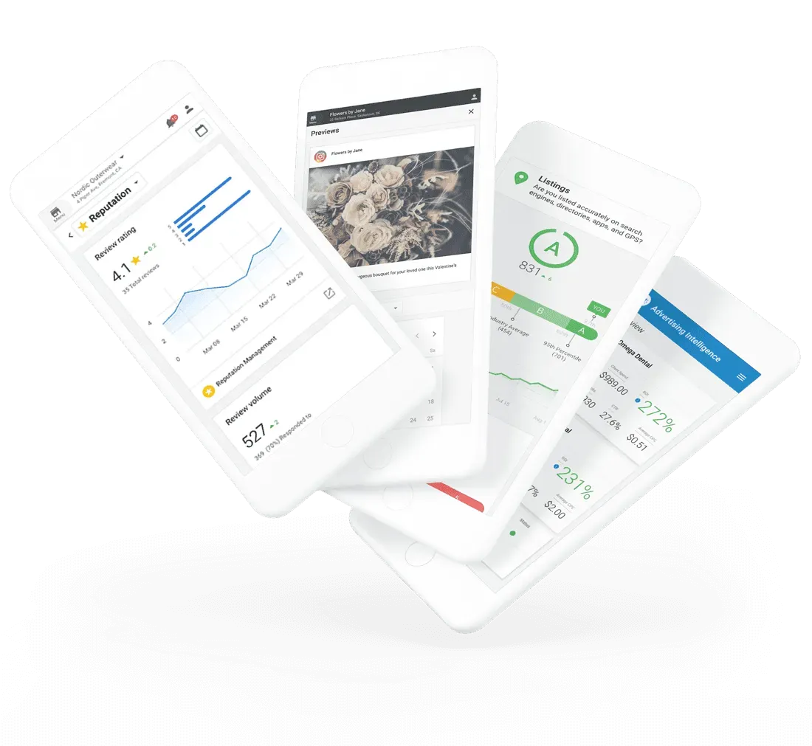

AI Visibility Scan
See exactly where your business shows up across search, maps, and AI before you decide what to fix.
- Where you’re visible
- Where you’re missing
- What is holding you back
A simple system to see where you stand and strengthen your visibility across AI.
The homepage should make the offer obvious: first you see where you stand, then you get a live operating view, then we strengthen the signals that shape who gets chosen.
See exactly where your business shows up across search, maps, and AI before you decide what to fix.
Get a real-time operating view of how your business looks online while your scan is being built.
Strengthen the listings, trust, schema, and signals that make it easier for customers and AI systems to choose you.
Most businesses discover there is more to improve than they expected.
Introducing the AI Visibility Toolkit — your AI-powered system to strengthen visibility, trust, and growth in one place.
Explore the AI Visibility Toolkit
Your clarity layer. It shows where you stand across search, maps, and AI before you decide what to fix.
Your operating layer. Visibility, activity, and management in one place so the right signals stay in view.
Your activation layer. It improves how your business is understood, trusted, and recommended.
Our AI Visibility Scan shows you where your business appears, where you’re missing opportunities, and why competitors may be getting chosen instead.
Get Your Free AI Visibility ScanFast read on your visibility gaps
See how often your business is represented clearly across AI, search, and local results.
Find the places where broken or disconnected signals are costing you trust.
Know what to fix first instead of guessing where your attention should go.
Executive. Connected. Intelligent.
One platform that brings together your AI visibility, listings, reviews, social, ads, website, and inbox so your signals stay aligned in one place.
See the signals that influence how your business is being understood across search and AI.
Centralize replies, review workflows, and trust-building conversations in one operating layer.
Track paid performance alongside the visibility and conversion behavior it supports.
Every tool your business runs on — reputation, listings, social, ads, website, inbox — all feeding into one unified command center.
Protect the trust signals AI and customers both read first.
Keep local data clean, connected, and easier for systems to trust.
Support the pages and entities that explain what your business does clearly.
See how demand generation supports visibility and conversion behavior.
Three core capabilities that help your team improve AI visibility, protect trust signals, and act faster.
A full-view dashboard showing how your business appears across AI, local search, reviews, and the channels that shape selection.
Centralize customer conversations so faster, clearer responses reinforce the trust and consistency signals AI systems look for.
Understand how paid campaigns support demand, visibility, and conversion behavior across search and AI-influenced journeys.
One HVAC company moved into top local positions in less than 30 days by improving the visibility and trust signals that shape decision time.
People now search across Google, Google Maps, Apple Maps, voice search, and AI-assisted tools before they ever contact a business. If a company is not visible or does not look credible in those moments, it loses the chance before the conversation even starts.
Clarity first. Then a plan. We help you see what customers and AI systems are seeing before you commit to the next step.